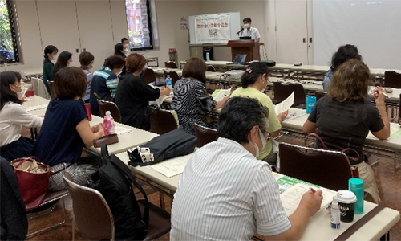

2021年度助け合い活動交流会報告
さまざまな多主体協働の事例を学びました
10月11日（火）10時30分より、埼玉県県民健康センター大会議室Aにてオンライン併用で開催し、各生協で福祉助け合い活動に関わる4生協29人（コープみらい10人、パルシステム埼玉2人、生活クラブ生協4人、医療生協さいたま9人、埼玉県生協連4人）が参加しました。
ウエルシア薬局による多主体協働による地域コミュニティづくりを学び、地域の社会資源や他団体・他業種との連携をイメージしながら、今後の助け合い活動を考え、また各生協による助け合い活動の現状を学びました。
講師：ウエルシア薬局（株）地域包括推進部 宮﨑進一さん
はじめに、埼玉県生協連専務理事の吉川より、この間のフードバンク活動や生活困窮者支援など、他団体や事業者との連携ですすめてきており、生協で自己完結するのではなく、「共助」「連携」しながら、地域包括ケアシステムをどう作り上げていくか、地域での多主体協働を視点に、助け合い活動について考えていきましょうと述べました。
宮﨑 進一さん
次に、講師の宮﨑進一さんから、ウエルシア薬局による店舗内に設置されたウエルカフェというフリースペースは、現在全国で362店舗に設置され、埼玉県内では24市町40店舗まで広がっていること、また、地域包括ケアシステムにおける位置づけやさいたま市や下仁田町における行政との一般介護予防事業・生活支援体制整備事業・認知症総合支援事業での多岐にわたる協働事例なども説明いただき、ウエルカフェを通した3つの地域協働活動（ウエルカフェの利活用・地域活動への協働参加・担い手づくりの協働）の提案もいただきました。

後半は、医療生協さいたまによる秩父地域での連携事例報告、会員生協によるたすけあい活動報告をおこない、コープみらい、パルシステム埼玉、生活クラブ生協、医療生協さいたまからそれぞれ説明がありました。参加者からは、地域によって援助依頼に対応できないときに、他生協につなげるなど連携できたらいいなどの声がありました。